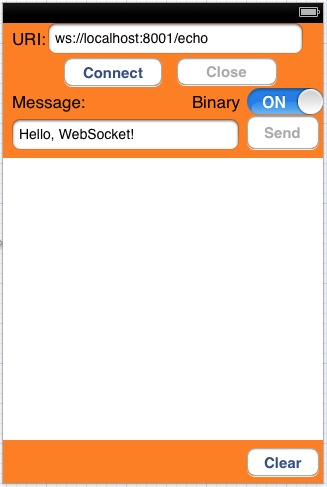
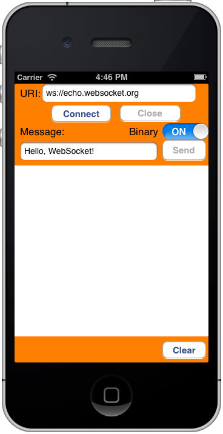

Use the Kaazing Gateway Objective-C WebSocket Client API
In this procedure, you will learn how to create an iOS client using the Kaazing Objective-C WebSocket Client API. You will learn how to create an Xcode project and add the necessary frameworks in order to use the Objective-C WebSocket Client API, and implement the Objective-C WebSocket Client API methods to enable your client to send and receive Echo messages with the Echo service running on a public Gateway.
The code used in this procedure is taken from the Kaazing Objective-C WebSocket tutorial app that is available at https://github.com/kaazing/ios.client.tutorials. The demo is located in ws/src.
This procedure assumes that you are familiar with Objective-C programming and are an advanced user of the Xcode IDE for creating native iOS clients. If you are new to Objective-C and Xcode, see Write Objective-C Code and the tutorial Your First iOS App. An excellent video tutorial is Objective-C by thenewboston.org. A very brief overview of Objective-C is Learn Objective-C from Learn Cocoa.
This procedure assumes that you have the required iOS Developer Program credentials.
The Xcode project created in this procedure uses features available in Xcode 4.1 or later and iOS SDK 5.0 and later.
Download and install Apple Xcode 4.4 or later (requires Mac OS X 10.7.4 or later). The Xcode bundle includes the iOS SDK.
Review the components that will be used to create the Objective-C client. A quick review of these components will give you an overview of how the client is constructed.
Component
Description
KGWebSocket.framework
Kaazing Objective-C WebSocket framework
CFNetwork.framework
Core Foundation framework that provides a library of abstractions for network protocols. For more information on CFNetwork, see Introduction to CFNetwork Programming Guide.
MainStoryboard.storyboard
The storyboard for the user interface look and feel and the interactive controls.
KGViewController.h
The header file that contains the target-action mechanism: how the user interface elements send an action message to an object that knows how to perform the corresponding action method (defined in KGViewController.m). In this file, user interface objects and outlet connections (connections between user interface objects and custom controller objects) are defined for the user interface controls. For more information, see Outlets.
KGViewController.m
The implementation file (sometimes called a source file) where the architecture of the client is defined, including how the client responds to different events.
KGWebSocket class
Provides the API for creating and managing a WebSocket connection, as well as sending and receiving data on the connection.
KGWebSocketFactory class
An instance of KGWebSocket is created using KGWebSocketFactory. This establishes a full-duplex connection to the target location.
WebSocket Listeners
These are the methods used to handle WebSocket events such as: connection open, message received, error received, connection closed.
WebSocket Send Message method
This method is used to send messages as text or binary.
Launch Xcode.
Create a new Xcode project.
Click File, then New, and then Project.
Under iOS, click Application, and click Single View Application. Click Next. The project options page appears.
Enter the name WebSocketDemo in Product Name, and the class prefix KG in Class Prefix. Xcode uses the product name you entered to name your project and the client, and the class prefix to name the classes and files it generates for you.
In Company Identifier, enter the name of your company.
In Devices, make sure that iPhone is selected.
Make sure that the Use Storyboards and Use Automatic Reference Counting options are selected and that the Include Unit Tests option is unselected.
Click Next.
Specify a location for your project (leave the Source Control option unselected) and then click Create. The new project is created along with the default files.
Add the Kaazing Objective-C WebSocket framework to the project.
Navigate to the location of the Kaazing Objective-C WebSocket framework in the Kaazing Enterprise Objective-C Client SDK:
KGWebSocket.framework
Drag the KGWebSocket.framework file into the Frameworks folder in the Xcode project navigator.
In the Choose options for adding these files dialog that appears, enable the Copy items into destination group’s folder checkbox, select your project in Add to targets, and click Finish.
Xcode adds the framework to the project navigator, updates the Framework Search Paths setting in Build Settings with the path to the framework, and updates the Link Binary With Libraries settings in Build Phases automatically.
Note: You can also choose to add the KGWebSocket.framework file into your local /Library/Frameworks/ folder or a network share before adding it to your project. This is a common practice for managing frameworks.
Add CFNetwork.framework to the project. CFNetwork is a framework in the iOS Core Services framework that provides a library of abstractions for network protocols.
In the project navigator, select the target to which you want to add a library or framework. In this example, WebSocketDemo.
Click Build Phases at the top of the project editor.
Open the Link Binary With Libraries section.
Click the Add (+) button to add a library or framework.
Enter CFNetwork.framework in the search field, select CFNetwork.framework in the results, and click Add.
The CFNetwork.framework is now listed in the Frameworks folder in the project navigator.
Add the -ObjC value to the Other Linker Flags build setting because the Kaazing Gateway Objective-C API code you add links against an Objective-C static library that contains categories. You must add this value to prevent a runtime exception of "selector not recognized". For more information, see Building Objective-C static libraries with categories.
In the project navigator, select the target to which you want to add a library or framework. In this example, WebSocketDemo.
Click the Build Settings tab and scroll down to the Linking section.
In Other Linker Flags, add the value -ObjC.
Build the interface for the client using MainStoryboard.storyboard and the View Controller.
Click MainStoryboard.storyboard in the project navigator. A blank scene appears.
Expand View Controller in the editor area and click View.
Click the Utility view to display the Utility area.
Show the Object Library, and choose Controls from the pop-up menu.
Drag the following controls into the scene, and give them the values listed in the following table. You might want to add a background color to the scene in order to display controls clearly.
Control
Purpose
Value
Label
URI text label
URI:
Text Field
Field where users enter a WebSocket address
ws://localhost:8001/echo (or public address wss://sandbox.kaazing.net/echo)
Button
Connect button
Connect
Text Field
Field where users enter a message
Hello, WebSocket
Label
Message text label
Message:
Button
Send button
Send
Button
Close button
Close
Text View
Area where the connection state is displayed, and where sent and received messages are displayed
No value
Button
Clear button
Clear
Switch
Switch between text and binary messages
No value. Set State to On.
Label
Binary text label
Binary
When you are finished, the scene should look like the following:

Figure: Completed View Controller Scene
Add the actions for the buttons to the view controller header file. In our example, the file is named KGViewController.h.
Control-drag the UI controls into the KGViewController class in KGViewController.h to create actions and outlet connections (an outlet describes a connection between two objects). Configure the actions and outlet connections so that KGViewController.h appears as follows:
When you Control-drag the UI controls in the KGViewController, the popover control appears:
Figure: The Xcode popover control
For action method declarations (IBAction), choose Action in the the Connection drop-down. For outlet connections (IBOutlet), choose Outlet in the Connection drop-down. This is a common Xcode procedure. If you are unfamiliar with this procedure, review the Configuring the View step in Your First iOS App.
Notes:
For all of the buttons, ensure that Touch Up Inside is selected in the Sent Events section of the Connections Inspector. Xcode will likely configure this automatically.
While you can paste the above code into your header file, if you control-drag the UI elements into the code from the scene (press and hold the Control key while you drag the button to the implementation file in the assistant editor pane) and use the popover control to specify the outlet connections, you can ensure that you have all the settings correct.
When you add the action methods, corresponding stub methods are added to the KGViewController.m implementation file automatically. You will update these methods in KGViewController.m with the Kaazing Gateway Objective-C API in later steps.
Some iOS clients define the interface in the implementation file instead of the header file. The client in this procedure defines the interface in the header file and the implementation methods in the implementation file.
Import the WebSocket header into the KGViewController.m implementation file:
Add the createAndEstablishWebSocketConnection method to create the WebSocket factory and WebSocket:
- (void) createAndEstablishWebSocketConnection {
@try {
NSString *location = self.uriTextField.text;
[self log:[@"CONNECT: " stringByAppendingString:location]];
// Create KGWebSocketFactory
_factory = [KGWebSocketFactory createFactory];
// Create KGWebSocket from the KGWebSocketFactory
NSURL *url = [NSURL URLWithString:location];
_websocket = [_factory createWebSocket:url];
/*
Add KGRevalidateExtension's name as an enabled extension to the
KGWebSocket created earlier.
The extension will be negotiated during handshake.
*/
NSString *extensionName = [[KGRevalidateExtension revalidateExtension] name];
[_websocket setEnabledExtensions:[NSArray arrayWithObjects:extensionName, nil]];
/*
Set up WebSocket listeners using block based approach
The application developer can use a delegate based approach as well.
*/
[self setupWebSocketListeners];
// Connect to the Gateway over WebSocket
[_websocket connect];
}
@catch (NSException *exception) {
[self log:[exception reason]];
}
}
Add the setupWebSocketListeners method to manage WebSocket connection events, incoming WebSocket messages, and any errors returned, and write event status to the log:
- (void) setupWebSocketListeners {
KGViewController* ref = self;
/*
Attach a block to execute when WebSocket connection is established.
This indicates that the connection is ready to send and receive data.
*/
_websocket.didOpen = ^(KGWebSocket* webSocket) {
dispatch_async(dispatch_get_main_queue(), ^{
[ref log:@"CONNECTED"];
[ref updateUIcomponents:YES];
});
};
/*
The block to execute when a message is received from the Gateway.
The data is either UTF8-String (type: NSString) or binary (type: NSData)
*/
_websocket.didReceiveMessage = ^(KGWebSocket* webSocket, id data) {
dispatch_async(dispatch_get_main_queue(), ^{
[ref log:[NSString stringWithFormat:@"MESSAGE: %@", data]];
});
};
// The block to execute when an error occurs.
_websocket.didReceiveError = ^(KGWebSocket* webSocket, NSError *error) {
dispatch_async(dispatch_get_main_queue(), ^{
[ref log:[NSString stringWithFormat:@"MESSAGE: %@",
[error localizedFailureReason]]];
});
};
// The block to execute when the connection is closed
_websocket.didClose = ^(KGWebSocket* websocket, NSInteger code, NSString* reason,
BOOL wasClean) {
dispatch_async(dispatch_get_main_queue(), ^{
[ref log:[@"CLOSED" stringByAppendingFormat:@"(%i)", code]];
[ref updateUIcomponents:NO];
});
};
}
Modify the sendMessage: method for both text and binary messages. The sendMessage method was generated automatically when you added the action to the Send button, but the method needs to be modified to call the WebSocket object and use its send: method for transmitting data to the Gateway over the WebSocket connection:
- (IBAction)sendMessage:(id)sender {
@try {
if ([binarySwitch isOn]) { // Send binary messages
NSData *data = [self.messageTextField.text
dataUsingEncoding:NSUTF8StringEncoding];
[self log:[NSString stringWithFormat:@"SEND: %@", data]];
// Use the send: method from the KGWebSocket class
[_websocket send:data];
}
else {
NSString *msg = self.messageTextField.text; // Send text messages
[self log:[@"SEND: " stringByAppendingString:msg]];
[_websocket send:msg];
}
}
@catch (NSException *exception) {
[self log:[exception reason]];
}
}
Modify the connectButton: method. The connectButton: method was generated automatically when you added the action to the Connect button, but the method needs to be modified to call the method for creating the WebSocket connection and updating the UI:
- (IBAction)connectButton:(id)sender {
// Call the method for creating the WebSocket connect
[self createAndEstablishWebSocketConnection];
// Disable the URI field
self.uriTextField.enabled = NO;
// Change the URI field’s background color
self.uriTextField.backgroundColor = [UIColor lightGrayColor];
}
Modify the closeButton: method to close the WebSocket connection and catch any exceptions:
Add the applicationDidEnterBackground and applicationWillEnterForeground methods for managing the WebSocket connection when the application is sent to the background or returns to the foreground:
- (void)applicationDidEnterBackground {
// when application moves to background,
// close the open websocket connection, set reconnect to true
if (_websocket != nil && [_websocket readyState] == KGReadyState_OPEN) {
[_websocket close];
_reconnect = YES;
}
else {
_reconnect = NO;
}
}
- (void)applicationWillEnterForeground {
//if reconnect equals to true, reconnect the websocket
if (_websocket != nil && [_websocket readyState] == KGReadyState_OPEN) {
[self updateUIcomponents:YES];
}
else {
[self updateUIcomponents:NO];
if (_reconnect) {
//connection was open when application enter background, reconnect
[self createAndEstablishWebSocketConnection];
}
}
}
The methods use the readyState property to determine the current state of the connection. readyState can have the values 0 (CONNECTING), 1 (OPEN), 2 (CLOSING), 3 (CLOSED). These are the ready state codes defined in the WebSocket API.
The remaining methods are used to control the interface of the client and are not WebSocket-related.
Add the remaining methods to control the interface of the client.
Add the textFieldShouldReturn: method to set the text field as first responder and keep this status to receive keyboard input:
- (void)viewDidLoad {
[super viewDidLoad];
// Do any additional setup after loading the view, typically from a nib.
}
Note:viewDidload is deprecated in iOS 6.0, as are some of the other methods in this demo. The demo is intended to work on iOS 5.1+ and iOS 6.0+, so these deprecated methods are used. If you are developing for iOS 6.0+ only, review Deprecated UIViewController Methods from Apple.
Add a viewDidUnload method for when the client unloads after the viewDidLoad method that is automatically added by Xcode.
- (void)viewDidUnload
{
[self setUriTextField:nil];
[self setMessageTextField:nil];
[self setSendButton:nil];
[self setConnectButton:nil];
[self setCloseButton:nil];
[self setTextView:nil];
[self setBinarySwitch:nil];
[super viewDidUnload];
// Release any retained subviews of the main view.
}
In the Scheme menu, select iPhone 5.1 Simulator or iPhone 6.1 Simulator.
Click Run.
The iPhone Simulator displays the client.

Figure: Your WebSocket Demo client on the iPhone Simulator
In URI, enter ws://localhost:8001/echo (or public address wss://sandbox.kaazing.net/echo).
Click Connect. The client connects to the Echo service hosted by the Gateway over WebSocket. The log displays:
CONNECT: wss://sandbox.kaazing.net/echo
CONNECTED
Click Send. The text message is sent to the Gateway as binary. The log displays the sent binary message and the Echo service response from the Gateway:
SEND: <48656c6c 6f2c2057 6562536f 636b6574 21>
MESSAGE: <48656c6c 6f2c2057 6562536f 636b6574 21>
Switch the Binary switch to OFF and click Send. The log displays the sent text message and the Echo service response from the Gateway:
SEND: Hello, WebSocket!
MESSAGE: Hello, WebSocket!
Click Close to close the WebSocket connection and end the session.
Convert Your Objective-C (iOS) Client to a 64-Bit Runtime Environment
iPhone 5s, iPad Air and iPad mini (2nd generation) both run on a completely new processor architecture: arm64. arm64 is the standard, 64-Bit architecture in Xcode 5.0.1. You can use Xcode 5.0.1 to update your Objective-C (iOS) client to support arm64. For more information, see Converting Your App to a 64-Bit Binary.
To update your Objective-C (iOS) client to support arm64:
Install Xcode 5.0.1 or later from the Mac App Store.
Open your Objective-C (iOS) client project. Xcode prompts you to modernize your project. Modernizing the project adds new warnings and errors that are important when compiling your app for 64-bit.
Update your project settings to support iOS 5.1.1 or later. You cannot build a 64-bit project if it targets an iOS version earlier than iOS 5.1. Change the Architectures build setting in your project to Standard Architectures (including 64-bit). Set the Deployment Target to 7.1. For more information, see Converting Your App to a 64-Bit Binary.